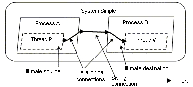
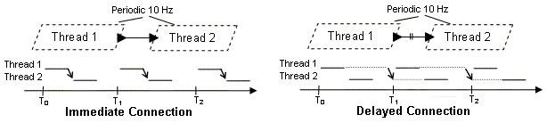
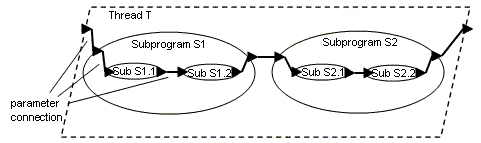
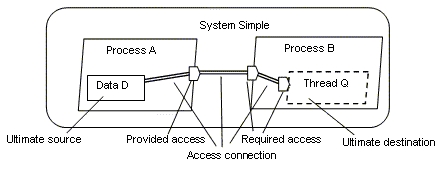

Previous
Next
Previous
Next 
| 9.1 Connections |
The AADL supports three types of connections: port
connections, parameter connections, and
access connections. Port connections represent the transfer of data and control between
two
concurrently executing components, i.e., between two threads or between a thread and a
processor or device. Parameter connections denote the flow of data through the parameters of a
sequence of subprogram calls, i.e., between units of sequential execution within a thread. Access
connections designate access to shared data components by concurrently executing threads or by
subprograms executing within a thread. They also represent communication between processors,
memory, and devices by accessing a shared bus.
Syntax
connection ::=
port_connection
| parameter_connection
| access_connection
connection_refinement ::=
port_connection_refinement
| parameter_connection_refinement
| access_connection_refinement
| 9.1.1 Port Connections |
Port connections represent transfer of data and control
between two concurrently executing
components, i.e., between two threads or between a thread and a processor or device. These
connections are semantic port connections. A semantic port connection is determined by
a
sequence of one or more individual port connection declarations that follow the component
containment hierarchy in a fully instantiated system from an ultimate source to an ultimate
destination. An individual port connection declaration links a port of one subcomponent to
the port
of another. Or it joins a port of a subcomponent with a port of a containing component.
Semantic port connections are illustrated in Figure 11.
The ultimate source of a semantic port
connection is an outgoing feature, i.e., an out or in out port of a thread, processor,
or device
component. The ultimate destination of a semantic port connection is an incoming feature,
i.e., an
in or in out port of a thread subcomponent, a processor or device component. In the case
of event
connections and port group connections, a mode transition may also be specified as part of the
port connection.
Port connection declarations follow the containment hierarchy
of threads, thread groups, processes
and systems. Some connections link an outgoing feature to the corresponding feature in the
containing component and an incoming feature to the corresponding feature of a contained
component. In other words, these connections traverse up and down the containment hierarchy.
Other connections connect outgoing features of a component
to incoming features of another
component at the same level of the containment hierarchy, i.e., it connects sibling components.
These connections occur at the highest level required for the connection declaration or at the top of
the containment hierarchy required for the declaration.
Semantic port connections may also route a raised event
to a modal component through a
sequence of connection declarations. A mode transition in such a component is the ultimate
destination of the connection, if the mode transition names an in or in out event port
in the
enclosing component, or an out or in out event port of one of the subcomponents
(see Section
11).

Figure 11 Semantic Port Connection
This section defines the concepts of departure and arrival
times of port connection transmission for
each of the port connection categories, i.e., for data port connections, event port
connections,
event data port connections, and port group connections. The transfer semantics
between
connected ports are defined such that the departure and arrival times of connection transmissions
occurs in terms of deadline, execution completion, and dispatch times. These semantics ensure
deterministic communication between periodic threads through data ports.
Syntax
port_connection ::=
data_connection
| event_connection
| event_data_connection
| port_group_connection
data_connection ::=
[ defining_data_connection_identifier
:]
data port source_unique_port_identifier
( immediate_connection_symbol | delayed_connection_symbol )
destination_unique_port_identifier
[ { { property_association }+ } ]
[ in_modes_and_transitions
] ;
immediate_connection_symbol ::= ->
delayed_connection_symbol ::= ->>
event_connection ::=
[ defining_event_connection_identifier
:]
event port source_unique_port_identifier
-> destination_unique_port_identifier
[ { { property_association }+ } ]
[ in_modes_and_transitions
] ;
event_data_connection ::=
[ defining_event_data_connection_identifier
:]
event data port source_unique_port_identifier
-> destination_unique_port_identifier
[ { { property_association }+ } ]
[ in_modes_and_transitions
] ;
-- connection between port groups of
two subcomponents or between
-- a port group of a subcomponent and
a port group in the component type
port_group_connection ::=
[ defining_port_group_connection_identifier
:]
port group source_unique_port_group_identifier
-> destination_unique_port_group_identifier
[ { { property_association }+ } ]
[ in_modes_and_transitions
] ;
port_connection_refinement ::=
connection_identifier
: refined to
( data port | event port | event data port | port group )
( ( { { property_association }+ }
[ in_modes_and_transitions
] )
| in_modes_and_transitions
) ;
unique_port_identifier ::=
-- port in the component type
component_type_port_identifier
|
-- port in a subcomponent
subcomponent_identifier . port_identifier
|
-- port element in a port group of the component type
component_type_port_group_identifier
. element_port_identifier
unique_port_group_identifier ::=
-- port group in the component type
component_type_port_group_identifier
|
-- port group in a subcomponent
subcomponent_identifier . port_group_identifier
|
-- port group element in a port group of the component type
component_type_port_group_identifier
.
element_port_group_identifier
Naming Rules
The defining identifier of a defined port connection
declaration must be unique in the local
namespace of the component implementation with the connection subclause. For mode-specific
connection declarations, as indicated by the in_modes_and_transitions subclause, a
connection name may appear more than once.
The connection identifier in a port connection refinement
declaration must refer to a named
connection declared in an ancestor component implementation.
A source or destination reference in a port connection
declaration must reference a port or port
group declared in the component type, a port or port group of one of the subcomponents, or a port
or port group that is an element of a port group in the component type.
Legality Rules
The ultimate source of a semantic port connection must
be a feature of a thread, processor, or
device. The source feature referenced in a port connection declaration must be a feature of a
thread, thread group, process, processor, device, or system component. The ultimate destination
of a semantic port connection must be a port of a thread, a processor, a device. If the ultimate
destination is the result of a mode transition, the mode change is indicated by the mode subclause
of the respective thread, thread group, process, system, device, bus, memory, or processor
naming an in event port in one of its mode transitions. The destination feature
referenced in a
port connection declaration must be a feature of a thread, thread group, process, processor,
device, or system component.
One end of the connection must be a thread. The
other end may be a processor, a device, or a
thead.
If the ultimate destination of a semantic port connection
is the result of a mode transition, then the
ultimate source must be an out event port.
If a semantic port connection is declared to apply to
a particular mode, then the ultimate source
and ultimate destination components must be part of that mode.
If a semantic port connection is declared to apply to
a particular mode transition, then the ultimate
source component must be part of a system mode that includes the old mode identifier and the
ultimate destination component must be part of a system mode that includes the new mode
identifier.
The category of the port connection declaration must
match the source and destination features as
described in the following paragraphs. This implies that all connection declarations of a semantic
connection must be of the same category.
The direction declared for the destination feature of
a port connection declaration must be
compatible with the direction declared for the source feature(s) as defined by the following rules:
-
If the port connection declaration represents a connection between sibling components, then the source must be an out or an in out port and the destination must be an in or an in out port, or in the case of port group connections the source and destination port groups must be complements of each other (see Section 8.2).
- If the port connection declaration represents a connection between elements of two port groups in the component type, then source must be an in or an in out port and the destination must be an out or an in out port, or in the case of port group connections the source and destination port groups must be complements of each other (see Section 8.2).
- If the port connection declaration represents a connection up or down the containment hierarchy, then the source and destination must both be an out or an in out port, or both an in or in out port, or in the case of port group connections the port groups of the same port group type.
A data port cannot be the destination feature reference
of more than one port connection
declaration unless each port connection declaration is (are) contained in a different mode. In
this
case, the restriction applies for each mode.
The ultimate source and ultimate destination of a delayed
port connection must be periodic
threads.
For data and event data port connections, the data classifier
of the source port must be identical to
the data type of the destination port.
If more than one port connection declaration in a semantic
port connection has a property
association for a given connection property, then the resulting property values must be identical.
For port group connections the following must hold:
-
If the connection declaration represents a component connection between sibling components, the port group types must be complements as indicated with the inverse of statement in one of the two port group types.
- If the connection declaration represents a connection up or down the containment hierarchy, the port group types must be identical.
Standard Properties
Connection_Protocol: Supported_Connection_Protocols
Allowed_Connection_Binding_Class:
inherit list of classifier(processor, bus,
device)
Allowed_Connection_Binding: inherit list of reference
(bus, processor,
device)
Not_Collocated: list of reference
(data, thread, process, system,
connections)
Actual_Connection_Binding: inherit reference
(bus, processor, device)
Semantics
A semantic port connection represents directed flow of
data and control between two threads,
between a processor and a thread, or a device and a thread. In the case of event port connections
the ultimate destination can be a in a new mode.
The AADL supports n-to-n connectivity for event and event
data ports. A port may have multiple
outgoing connections, i.e., its content is transmitted to multiple destinations. This means that
each destination port receives an instance of the event, or event data being transmitted. Similarly,
event and event data ports can support multiple incoming connections resulting in sequencing and
possibly queuing of incoming events and event data.
Data connections are restricted to 1-n connectivity,
i.e., a data port can have multiple outgoing
connections, but only one incoming connection. If the component with the destination data port
has modes then this restriction applies to each mode. Port groups may have multiple outgoing and
incoming connections unless any ports that are elements of a port group place additional
restrictions.
If a component has an in out port, this port may
be the destination of a connection from one
component and the source of a connection to another component. Bi-directional flow between two
components is represented by two connections between the in out ports of two components.
A port connection can be refined by adding property associations
for the connection in a
connection refinement declaration.
A port connection declared with the optional in_modes_and_transitions subclause
specifies
whether the connection is part of specific modes or is part of the transition between two specific
modes. The detailed semantics of this subclause are defined in Section 11.1.
While in a given mode, transmission over a port connection
only occurs if the connection is part of
the current mode.
During a mode switch, transmission over a data port connection
only occurs at the actual time of
mode switch if the port connection is declared to apply to the transition between two specific
modes. The actual mode switch initiates transmission. This allows data state to be transferred
between threads active in different modes.
A data port connection is declared to be immediate
( “->” ) or to be delayed ( “->>” ). A semantic
data port connection is considered to be delayed if at least one of the connection declarations is
declared to be delayed. Otherwise, the semantic data port connection is considered to be
immediate. Typically, a delayed data connection is specified through the sibling connection
declaration, i.e., the declaration at the top of the containment hierarchy of a semantic connection.
For immediate data port connections the data transmission
is initiated when the source thread
completes and enters the suspended state. Immediate data transfer only occurs when the periods
of the sending and receiving thread align, i.e., their dispatch occurs logically simultaneous.
The
actual execution of the receiving thread is delayed until the sending thread completes execution.
The content of the receiving thread’s port variables is determined at the time of dispatch except
for
data ports that are connected by immediate connection. Their value is the data port value of the
sending thread at the time of the sending thread’s execution completion.
Immediate and delayed connections are illustrated in
Figure 12. Thread 1 and Thread 2 are two
periodic threads executing at a rate of 10Hz, i.e., they are logically dispatched every 100 ms.
For
immediate connection, shown on the left of the figure, the actual start of execution of the receiving
thread (Thread 2) will be delayed after its dispatch event until the sending thread (Thread 1)
completes execution and its out port data value has been transferred into the in port
of the
receiving thread. If Thread 2 executes at twice the rate of Thread 1, then the execution of Thread
2
will be delayed every time the two periods align to receive the data at completion of Thread 1. Every
other time Thread 2 will start executing at its dispatch time with the old value in its data port.
For delayed data port connections, the data transmission
is initiated at the deadline of the source
thread. The data is available at the destination port at the next dispatch of the destination
thread
that occurs at or after the source thread deadline. If the source deadline and the destination
dispatch occur at the same logical time instant, the transmission is considered to occur within the
same time instant. This is shown on the right of Figure 12. The output of Thread 1 is made
available to Thread 2 at the beginning of its next dispatch. Thread 1 producing a new output at
the
next dispatch does not affect this value.

Figure 12 Timing of Immediate & Delayed Data
Connections
If multiple transmissions occur for a data port connection
from the source thread before the
dispatch of the destination thread, then only the most recently transmitted data is available in the
destination port. In other words, the destination thread undersamples the transmitted data.
In the
case of two connected periodic threads, this situation occurs when the source thread has a shorter
period than the destination thread. In the case of a periodic thread connected to an aperiodic
thread, this situation occurs if the aperiodic thread receives two dispatch events with an inter-arrival
time larger than the period of the source thread. In the case of an aperiodic thread connected
to a
periodic thread, this situation occurs if the aperiodic thread has two successive completion times
less than the period of the periodic thread.
If no transmission occurs on an in data port between
two dispatches of the destination thread, then
the thread receives the same data again, resulting in oversampling of the transmitted data. A
status indicator is accessible to the source text of the thread as part of the port variable to
determine whether the data is fresh. This allows a receiving thread to determine whether a
connection source is providing data at the expected rate or at all.
The semantics of immediate and delayed data transmission
between periodic threads assures
deterministic communication of state data. The alignment of transmission start and end times
between the sending and receiving thread are statically known and are not affected by preemption
of thread execution and variation in actual execution time.
NOTES:
Such deterministic communication
cannot always be guaranteed if the transmission is initiated and
completed by explicit send and receive service calls in the source text of the sending and receiving
thread. If these calls are executed at the normal thread priorities, the time of actual data transfer
through
the send and receive call may vary and result in non-deterministic change in the send and receive order
of two communicating threads.
If a processor or device is the data connection source,
then the transmission is initiated and
completed when the destination thread is dispatched.
For event and event data connections the transmission
of control and data occurs immediately
when the source thread executes a Raise_Event call.
If the event connection source is a device or processor,
then the occurrence of an interrupt
represents the initiation of an event transmission.
Transmission completion for event and event data connections
results in queuing of the event or
event data. It also represents the arrival of a dispatch request for an aperiodic or sporadic
thread, if
the thread’s Dispatch
port is not connected. For details on the content of port variables at the
time of dispatch for periodic, aperiodic and sporadic threads see Section 8.1.
Within a synchronized system, an event arrives logically
simultaneously at all ultimate connection
destinations (see also Section 12.3).
Arrival of events on event ports can also trigger a mode
switch if the event port is named in a mode
transition originating in the current mode (see Section 11). Events that trigger mode transitions
are
not queued at event ports.
Processing Requirements and Permissions
The temporal semantics for port connections define several
cases in which the transmission
initiation and completion times are identical. While it is not possible to perform a transmission
instantaneously in a physical system, a method of implementing systems must suppy a thead
execution schedule that preserves the temporal and logical semantics of the model. In some
cases, this may result in a system where the actual sending thread completion time occurs before
the logical departure time of the transmission. Similarly, the actual receiving thread may begin
its
execution after the logical arrival of the transmission. Such an execution model is acceptable
if the
observed causal order is identical to that of the logical semantic model and all timing requirements
specified in all property associations are satisfied.
For port connections between periodic threads, the standard
semantics and default property
associations result in undersampling when the period of the sending thread is less than the period
of the receiving thread. Oversampling occurs when the period of the sending thread is greater than
the period of the receiving thread. A method of implementing systems is permitted to provide an
optimization which may eliminate any physical transfers of data that can be guaranteed to be
overwritten, or that can be guaranteed to be identical to previously transferred values. Error-free
transmission may be assumed when performing such an optimization.
A method of building systems must include a runtime capability
in every system to detect an
erroneous or failed transmission over a data connection between periodic threads to the degree of
assurance required by an application. A method of building systems must include a runtime
capability in every system to report a failure to perform a transmission by a sending periodic thread
to all connected recipients. A method of building systems must include a runtime capability in
every system to detect data errors in arriving transmissions over any connection to the degree of
assurance required by an application. The source language annex to this standard specifies the
application program interface used to obtain error information about transmissions. A method of
building systems may define additional error semantics and error detection mechanisms and
associated application programming interfaces.
NOTES:
All data values that arrive
at the data ports of a receiving thread are immediately transferred at the logical
arrival time into the storage resources associated with those features in the source text and binary
image
associated with that thread. A consequence of the semantic rules for data connections is that
the logical
arrival time of a data value to a data port contained in a thread always occurs either when that thread
is
dispatchable or during an interval of time between a dispatch event and a delayed start of execution,
e.g.,
due to an immediate connection. That is, data values will never be transferred into a thread’s
data ports
between the time it starts executing and the time it completes executing and suspends awaiting a new
dispatch.
Arriving event and event
data values may be queued in accordance with the queuing rules defined in the
port features section. A consequence of the semantic rules for event and event data connections
is that
there will be exactly one dispatch of a receiving thread for each arriving event or event data value
that is
not lost due to queue overflow, and event data values will never be transferred into a thread between
the
time it starts executing and the time it completes and suspends awaiting a new dispatch.
Examples
-- A simple example showing a system
with two processes and threads.
-- The threads have a semantic connection.
-- The connection declarations follow
the containment hierarchy.
data Alpha_Type
properties
Source_Data_Size =>
256 B;
end Alpha_Type;
port group xfer_plug
features
Alpha : out data port
Alpha_Type;
Beta : in data port
Alpha_Type;
end xfer_plug;
port group xfer_socket
inverse of xfer_plug
end xfer_socket;
thread P
features
Data_Source : out data
port Alpha_Type;
end P;
thread implementation P.Impl
properties
Dispatch_Protocol=>Periodic;
Period=> 10 ms;
end P.Impl;
process A
features
Produce : port group
xfer_plug;
end A;
process implementation A.Impl
subcomponents
Producer : thread
P.Impl;
Result_Consumer : thread
Q.Impl;
connections
data port
Producer.Data_Source -> Produce.Alpha;
data port Produce.Beta
-> Result_Consumer.Data_Sink;
end A.Impl;
thread Q
features
Data_Sink : in data
port Alpha_Type;
end Q;
thread implementation Q.Impl
properties
Dispatch_Protocol=>Periodic;
Period=> 10 ms;
end Q.Impl;
process B
features
Consume : port group
xfer_socket;
end B;
process implementation B.Impl
subcomponents
Consumer : thread
Q.Impl;
Result_Producer : thread
P.Impl;
connections
data port Consume.Alpha
-> Consumer.Data_Sink;
data port Result_Producer.Data_Source
-> Consume.Beta;
end B.Impl;
system Simple
end Simple;
system implementation Simple.Impl
subcomponents
pr_A : process A.Impl;
pr_B : process B.Impl;
connections
port group pr_A.Produce
-> pr_B.Consume;
end Simple.Impl;
| 9.1.2 Parameter Connections |
Parameter connections represent flow of data between
the parameters of a sequence of
subprogram calls in a thread. Parameter connections may be declared from an in data or
event
data port or in out data or event data port of the containing thread to a subprogram call in or in
out
parameter. Parameter connections also specify connections from an in parameter or in out
parameter of the containing subprogram to a subprogram call in or in out parameter, from
a
subprogram call out or in out parameter to a out or in out parameter
of the containing
subprogram, and from a subprogram call out or in out parameter to a subprogram call in or in
out
parameter or an out or in out data or event data port of the containing thread.
In other words, the
parameter connection declarations follow the containment hierarchy of subprogram calls nested in
other subprograms. This is illustrated in Figure 13.

Figure 13 Parameter Connections
For parameter connections, data transfer occurs at the
time of the subprogram call and call return.
In the case of subprogram calls to server subprograms in other threads, the data is first transferred
to a local proxy and from there passed to the remote subprogram.
Syntax
parameter_connection ::=
[ defining_parameter_connection_identifier
:]
parameter source_unique_parameter_identifier
-> destination_unique_parameter_identifier
[ { { property_association }+ } ]
[ in_modes
] ;
parameter_connection_refinement ::=
connection_identifier
: refined to parameter
{
{ property_association }+ }
[ in_modes ] ;
unique_parameter_identifier ::=
-- parameter in the thread or subprogram type
component_type_parameter_identifier
|
-- parameter in another subprogram call
subprogram_call_identifier . parameter_identifier
|
-- data or even data port in the thread type of the component
type
component_type_port_identifier
|
-- port element in a port group of the component type
-- The port element must be a data or event data port
component_type_port_group_identifier
. element_port_identifier
Naming Rules
The defining identifier of a defined parameter connection
declaration must be unique in the local
namespace of the component implementation with the connection subclause. For mode-specific
parameter connections, as indicated by the in_modes subclause, a connection name may appear
more than once.
The connection identifier in a parameter connection refinement
declaration must refer to a named
connection declared in an ancestor component implementation.
A source or destination reference in a parameter connection
declaration must reference a
parameter of a preceding subprogram call, a parameter declared in the component type of the
containing subprogram, a data port or event data port declared in the component type of the
enclosing thread, or a data port or event data port that is an element of a port group in the
component type of the enclosing thread.
Legality Rules
Parameter connections must adhere to the following rule
regarding their source and destination:
the source must be an in data or event data port
or in out data or event data port of the containing
thread and the destination a subprogram call in or in out parameter,
the source must be an in parameter or in out
parameter of the containing subprogram and the
destination a subprogram call in or in out parameter,
the source must be a subprogram call out or
in out parameter and the destination a out or in out
parameter of the containing subprogram,
the source must be a subprogram call out or
in out parameter and the destination a subprogram
call in or in out parameter or an out or in out data or event data port
of the containing thread.
If the parameter connection declaration represents a
parameter connection between sibling
components, then the source must be an out or an in out parameter and the destination
must be
an in or an in out parameter. Furthermore, the source must be a parameter
of a preceding
subprogram call in the call sequence, and the destination must be a parameter of a succeeding
subprogram call in the call sequence.
If a parameter connection is declared to apply to a particular
mode, then the source and destination
must be part of that mode.
A parameter cannot be the destination feature reference
of more than one parameter connection
declaration unless the source feature reference(s) of each parameter connection declaration is (are)
contained in a different mode. In this case, the restriction applies for each mode.
The data classifier of the source port or parameter must
be identical to the data type of the
destination port or parameter.
Semantics
Parameter connections represent sequential flow of data
through subprogram parameters in a
sequence of subprogram calls being executed by a thread. Those calls may be performed locally,
i.e., within the virtual address space of the containing process, or remotely by a synchronous call
to a server subprogram in another thread. In the latter case, the parameter values are passed
via a
local subprogram proxy.
Parameter connections are restricted to 1-n connectivity,
i.e., a data port or parameter can have
multiple outgoing connections, but only one incoming connection.
If a subprogram has an in out parameter, this
parameter may be the destination of an incoming
parameter connection and the source of outgoing parameter connections.
Parameter connections follow the call sequence order
of subprogram calls. In other words,
parameter connection sources must be preceding subprogram calls, and parameter connection
destinations must be successor subprogram calls.
The optional in_modes subclause specifies what modes the parameter connection is part of. The
detailed semantics of this subclause are defined in Section 11.1.
| 9.1.3 Access Connections |
Access connections represent access to shared data components
by concurrently executing
threads or by subprograms executing within thread. They also denote communication between
processors, memory, and devices by accessing a shared bus. These connections are semantic
access connections. A semantic access connection is defined by a sequence of one or more
individual access connection declarations that follow the component containment hierarchy in a
fully instantiated system from an ultimate source to an ultimate destination.
The ultimate source of a semantic access connection is
the data component or bus component
that is being shared. The ultimate destination of an access connection is the component requiring
the access without a contained subcomponent also requiring access. For data access
connections this can be a thread or a subprogram call. For bus access connections the ultimate
destination may be a processor, memory, or a device. The direction of the connection follows from
the provider of access to the requirer of access. Figure 14 illustrates a semantic data connection
from the data component D to thread Q.

Figure 14 Semantic Access Connection
The flow of data of a semantic access connection is determined
by the fact whether an ultimate
destination has read access or write access to the shared component. The actual data flow is
specified using the properties Required_Access or Provided_Access.
Syntax
access_connection ::=
[ access_connection_identifier
:]
( bus | data
) access unique_access_provider_identifier
->
unique_access_requirer_identifier
[ { { property_association }+ } ]
[ in_modes
] ;
access_connection_refinement ::=
connection_identifier
: refined to ( bus | data ) access
{
{ property_association }+ }
[ in_modes ] ;
unique_access_provider_identifier ::=
-- required access feature in the component type
component_type_access_identifier
|
-- provided access in a subcomponent
data_or_bus_subcomponent_identifier . access_identifier
|
-- data or bus subcomponent being accessed
data_or_bus_subcomponent_identifier
unique_access_requirer_identifier ::=
-- provided access feature in the component type
component_type_access_identifier
|
-- required access in a subcomponent
data_or_bus_subcomponent_identifier . access_identifier
Naming Rules
The defining identifier of a access connection declaration
must be unique in the local namespace of
the component implementation with the connection subclause. For mode-specific access
connections, as indicated by the in_modes subclause, a connection name may appear more than
once.
The connection identifier in an access connection refinement
declaration must refer to a named
connection declared in an ancestor component implementation.
A provider reference in an access connection declaration
must reference a provides access feature
of a subcomponent, a requires access feature in the component type of the containing component,
or a data or bus subcomponent. A requirer reference in an access connection declaration must
reference a requires access feature of a subcomponent or a provides access feature in the
component type of the containing component.
Legality Rules
All access declarations forming a semantic data access
connection must be data access
declarations. All access declarations forming a semantic bus access connection must be bus
access declarations.
The ultimate source of a semantic access connection must
be data or bus subcomponent. The
ultimate destination of a semantic data access connection must be a requires data access feature
of a thread or a subprogram call without a containing subprogram call requiring the same data
access. The ultimate destination of a semantic bus access connection must be a requires bus
access feature of a processor, memory, or device subcomponent.
If a semantic access connection is declared to apply
to a particular mode, then the ultimate source
and ultimate destination must be part of that mode.
For access connections between access features, the direction
declared for the destination feature
must be compatible with the direction declared for the source feature(s) as defined by the following
rules:
-
If the access connection declaration represents an access connection between access features of sibling components, then the source must be a provides access or a data or bus component and the destination must be a requires access.
- If the access connection declaration represents a feature mapping up or down the containment hierarchy, then the source and destination must both be a requires access, both be a provides access, or the source a data or bus subcomponent and the destination a provides access.
A requires access cannot be the destination feature reference
of more than one access connection
declaration unless the source feature reference(s) of each access connection declaration is (are)
contained in a different mode. In this case, the restriction applies for each mode.
For access connections the data type of the provider
access must be identical to the data type of
the requires access.
If more than one access feature in a semantic access
connection has an access
Required_Access
or Provided_Access
property association, then the resulting property
values must be compatible. This means that the provider must provide read-only or read-
write access if the requirer specifies read-only. Similarly, the
provider must provide write-
only or read-write access if the requirer specifies write-only. The provider must provide
read-write access
if the requirer specifies read-write. Finally, the provider must provide by-
method access if the requirer specifies by-method access.
Semantics
An access connection represents access to a shared data
component by concurrently executing
threads or by subprograms executing within thread. A bus access connection represents
communication between processors, memory, and devices by accessing a shared bus.
Access connections are restricted to 1-n connectivity,
i.e., a data or bus component can have
multiple outgoing access connections, but a requires access feature can only have one incoming
connection.
The actual data flow is determined by the value of the Required_Access or Provided_Access
property. Read means flow of data from the shared component to the component requiring access,
and write means flow of data from the component requiring access to the shared component.
The optional in_modes subclause specifies what modes the access connection is part of. The
detailed semantics of this subclause are defined in Section 11.1.